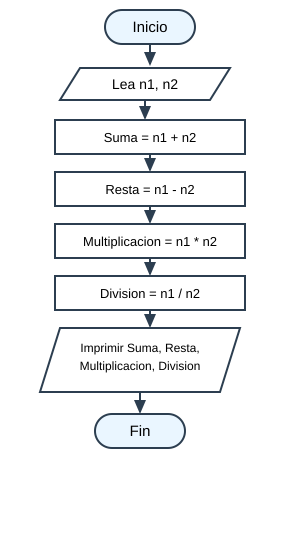
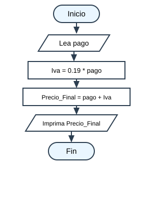
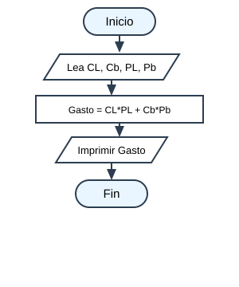

➡️ Algoritmos Secuenciales
Las tareas se suceden una tras otra, sin ninguna decisión
¿Qué es un algoritmo secuencial?
En un algoritmo secuencial las tareas se ejecutan una a continuación de otra, en orden, sin ninguna bifurcación ni decisión. Este tipo de algoritmo es útil para conocer el orden exacto en el que hay que realizar una tarea: primero leer los datos, después calcular y por último mostrar el resultado.
Operaciones básicas
Leer dos números y mostrar el resultado de su suma, resta, multiplicación y división.
Inicio { Lea n1, n2 Suma = n1 + n2 Resta = n1 - n2 Multiplicacion = n1 * n2 Division = n1 / n2 Imprimir Suma, Resta, Multiplicacion, Division Fin }

Diagrama de flujo secuencial de las operaciones básicas.
Cálculo del IVA
Pedir el precio base de un producto, calcular el 19% de IVA y mostrar el precio final a pagar.
Inicio { Lea pago Iva = 0.19 * pago Precio_Final = pago + Iva Imprima Precio_Final Fin }

Diagrama de flujo secuencial del cálculo del IVA.
Gasto en papelería
Pedir cantidad y precio unitario de libretas y bolígrafos para calcular el gasto total.
Inicio { Lea CL, Cb, PL, Pb Gasto = CL*PL + Cb*Pb Imprimir Gasto Fin }

Diagrama de flujo secuencial del gasto en papelería.
Área y perímetro de un rectángulo
Leer la base y la altura de un rectángulo. Calcular y mostrar su perímetro y su área.
Inicio { Lea B, H Area = B * H Perimetro = 2*B + 2*H Imprimir Area, Perimetro Final }
Diagrama de flujo secuencial del área y el perímetro.